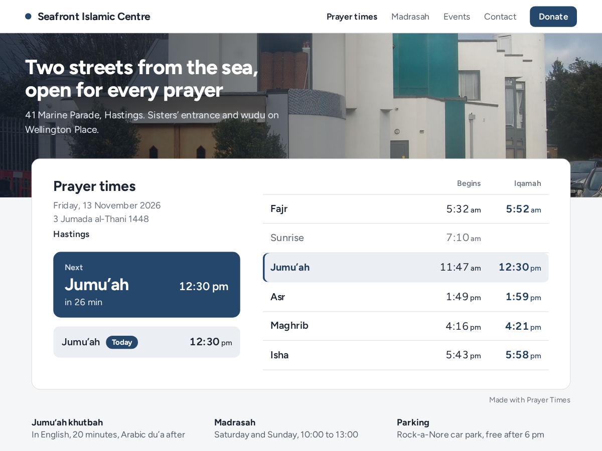

Prayer Times
Daily prayer and iqamah times for your mosque
- Next prayer with a live countdown, all day
- Calculated for your city, 12 methods, Hanafi Asr
- Iqamah as fixed times or minutes after adhan
- Jumu'ah, Hijri date and optional Arabic names

What it does
Most mosque websites carry a timetable someone retypes every month, or a PDF that's unreadable on a phone. Prayer Times puts today's salah times on your page and keeps them current: Fajr, Sunrise, Dhuhr, Asr, Maghrib and Isha, with the begin time and your iqamah (jamaat) time side by side.
The next prayer stands out with a countdown; after Isha it moves on to tomorrow's Fajr. It also shows the Hijri date and your Jumu'ah time, with Arabic prayer names if you want them.
Begin times are calculated for your masjid's coordinates and shown on its own clock, whatever time zone the visitor is in. You choose the method your mosque follows (Muslim World League, ISNA, Moonsighting Committee, Umm al-Qura, Karachi and more) and Standard or Hanafi Asr. These are calculated times: compare them once with your printed timetable, then shift a prayer by a minute if needed. Iqamah is a fixed time like 13:30 or minutes after the adhan.
Free shows today's times, the countdown and one Jumu'ah time, with a small credit link. Premium adds a printable monthly timetable, Ramadan mode with an Iftar countdown, up to four Jumu'ah times and iqamah changes from a chosen date, and removes the credit link.
Price
Free
- Today's prayer and iqamah times
- Countdown to the next prayer
- One Jumu'ah time
- Small credit link
Premium
$5/month, $4/month billed yearly (20%)
- Printable monthly timetable
- Ramadan mode with Iftar countdown
- More Jumu'ah times, iqamah by date
- Remove the credit link